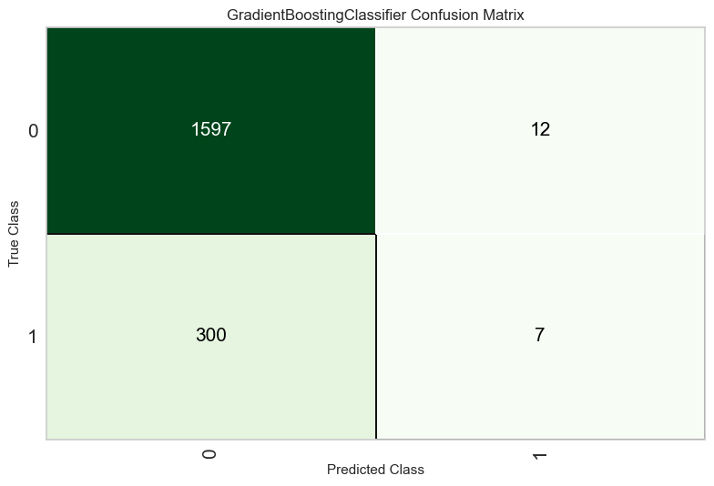

Ensemble Learning#
Ensamble Machine Learning methods combine predictions from multiple models to improve overall performance and generalization. In this lab we will use the Lending Club dataset to explore various ensemble techniques for classification tasks. To do so, we will explore the PyCaret library.
PyCaret is an open-source, low-code machine learning library in Python that simplifies the end-to-end machine learning process. It is designed to minimize the amount of code and manual effort required for common tasks in machine learning, making it accessible to both beginners and experienced data scientists. Let’s create a simple PyCaret workflow for a classification problem using Lending Club data.
Start by installing PyCaret and loading the data.
#!pip install pycaret
from pycaret.classification import *
import pandas as pd
# Load the CSV file into a Pandas DataFrame
# Load data from the first sheet
data = pd.read_excel('loan_data.xlsx')
# Setup PyCaret
clf_setup = setup(data, target='not.fully.paid', train_size=0.8, session_id=42)
# Compare models
best_model = compare_models()
| Description | Value | |
|---|---|---|
| 0 | Session id | 42 |
| 1 | Target | not.fully.paid |
| 2 | Target type | Binary |
| 3 | Original data shape | (9578, 14) |
| 4 | Transformed data shape | (9578, 20) |
| 5 | Transformed train set shape | (7662, 20) |
| 6 | Transformed test set shape | (1916, 20) |
| 7 | Numeric features | 12 |
| 8 | Categorical features | 1 |
| 9 | Preprocess | True |
| 10 | Imputation type | simple |
| 11 | Numeric imputation | mean |
| 12 | Categorical imputation | mode |
| 13 | Maximum one-hot encoding | 25 |
| 14 | Encoding method | None |
| 15 | Fold Generator | StratifiedKFold |
| 16 | Fold Number | 10 |
| 17 | CPU Jobs | -1 |
| 18 | Use GPU | False |
| 19 | Log Experiment | False |
| 20 | Experiment Name | clf-default-name |
| 21 | USI | 9742 |
| Initiated | . . . . . . . . . . . . . . . . . . | 12:52:00 |
|---|---|---|
| Status | . . . . . . . . . . . . . . . . . . | Fitting 10 Folds |
| Estimator | . . . . . . . . . . . . . . . . . . | Extra Trees Classifier |
| Model | Accuracy | AUC | Recall | Prec. | F1 | Kappa | MCC | TT (Sec) | |
|---|---|---|---|---|---|---|---|---|---|
| gbc | Gradient Boosting Classifier | 0.8401 | 0.6756 | 0.0326 | 0.5015 | 0.0608 | 0.0425 | 0.0938 | 0.5220 |
| lr | Logistic Regression | 0.8397 | 0.6226 | 0.0065 | 0.3517 | 0.0127 | 0.0082 | 0.0336 | 0.4550 |
| ridge | Ridge Classifier | 0.8396 | 0.0000 | 0.0049 | 0.4000 | 0.0096 | 0.0058 | 0.0298 | 0.0200 |
| rf | Random Forest Classifier | 0.8386 | 0.6461 | 0.0228 | 0.4028 | 0.0430 | 0.0270 | 0.0633 | 0.5870 |
| lda | Linear Discriminant Analysis | 0.8382 | 0.6780 | 0.0416 | 0.4386 | 0.0756 | 0.0496 | 0.0937 | 0.0410 |
| ada | Ada Boost Classifier | 0.8371 | 0.6617 | 0.0310 | 0.3838 | 0.0571 | 0.0344 | 0.0695 | 0.1340 |
| nb | Naive Bayes | 0.8198 | 0.6479 | 0.0897 | 0.2979 | 0.1369 | 0.0675 | 0.0834 | 0.0410 |
| knn | K Neighbors Classifier | 0.8155 | 0.5315 | 0.0432 | 0.1814 | 0.0696 | 0.0084 | 0.0113 | 0.5870 |
| svm | SVM - Linear Kernel | 0.7725 | 0.0000 | 0.1033 | 0.0618 | 0.0508 | 0.0036 | 0.0055 | 0.0190 |
| dt | Decision Tree Classifier | 0.7468 | 0.5406 | 0.2373 | 0.2250 | 0.2309 | 0.0796 | 0.0796 | 0.0500 |
| qda | Quadratic Discriminant Analysis | 0.3297 | 0.5042 | 0.7556 | 0.1647 | 0.2551 | 0.0047 | 0.0072 | 0.0390 |
The compare_models() function takes various machine learning models and trains them on the provided dataset. It automatically performs cross-validation and evaluates each model’s performance based on a set of predefined metrics (such as accuracy, precision, recall, F1-score, etc.). The function returns the best-performing model based on the evaluation metrics. The best_model variable will hold a reference to this model.
So what is the best model ? Apparently, the Gradient Boosting classifiers works pretty well with our data. Let’s fine-tune this model for better fit.
# Create a Model (choose the best performing one from compare_models)
gbc_model = create_model('gbc')
| Accuracy | AUC | Recall | Prec. | F1 | Kappa | MCC | |
|---|---|---|---|---|---|---|---|
| Fold | |||||||
| 0 | 0.8462 | 0.6635 | 0.0569 | 0.7778 | 0.1061 | 0.0861 | 0.1833 |
| 1 | 0.8396 | 0.7068 | 0.0569 | 0.5000 | 0.1022 | 0.0718 | 0.1262 |
| 2 | 0.8473 | 0.6903 | 0.0492 | 0.8571 | 0.0930 | 0.0771 | 0.1832 |
| 3 | 0.8381 | 0.6417 | 0.0246 | 0.3750 | 0.0462 | 0.0271 | 0.0606 |
| 4 | 0.8355 | 0.6355 | 0.0246 | 0.3000 | 0.0455 | 0.0219 | 0.0442 |
| 5 | 0.8420 | 0.6724 | 0.0410 | 0.5556 | 0.0763 | 0.0557 | 0.1181 |
| 6 | 0.8368 | 0.6977 | 0.0081 | 0.2500 | 0.0157 | 0.0057 | 0.0176 |
| 7 | 0.8368 | 0.6633 | 0.0325 | 0.4000 | 0.0602 | 0.0369 | 0.0750 |
| 8 | 0.8394 | 0.6748 | 0.0244 | 0.5000 | 0.0465 | 0.0321 | 0.0821 |
| 9 | 0.8394 | 0.7094 | 0.0081 | 0.5000 | 0.0160 | 0.0109 | 0.0473 |
| Mean | 0.8401 | 0.6756 | 0.0326 | 0.5015 | 0.0608 | 0.0425 | 0.0938 |
| Std | 0.0037 | 0.0242 | 0.0171 | 0.1833 | 0.0312 | 0.0270 | 0.0545 |
The create_model() function in PyCaret is used to train a machine learning model on a given dataset. It initializes and sets up the training process for a specific model, allowing you to specify the model you want to use and other relevant configurations. After training, it evaluates the model’s performance using cross-validation by default. You can customize the number of folds for cross-validation using the fold parameter.
The function returns a PyCaret model object that encapsulates the trained machine learning model, along with performance metrics and other relevant information. Let’s tune the model based on this output.
# Tune the Model
gbc_model_tuned = tune_model(gbc_model)
Fitting 10 folds for each of 10 candidates, totalling 100 fits
Original model was better than the tuned model, hence it will be returned. NOTE: The display metrics are for the tuned model (not the original one).
# plot some sort of assessement metric if desired. Walk-in the function to learn more.
plot_model(gbc_model_tuned, 'confusion_matrix')

You can use this trained model object for various purposes, such as making predictions on new data, further fine-tuning the model, or incorporating it into an ensemble. Here’s an example of using the trained model to make predictions on new data:
# Make Predictions on New Data
predictions = predict_model(gbc_model_tuned, data=data)
# Evaluate the tuned Model
evaluate_model(gbc_model_tuned)
| Model | Accuracy | AUC | Recall | Prec. | F1 | Kappa | MCC | |
|---|---|---|---|---|---|---|---|---|
| 0 | Gradient Boosting Classifier | 0.8496 | 0.7504 | 0.0705 | 0.8710 | 0.1304 | 0.1090 | 0.2221 |
# Save and Load Model
save_model(gbc_model_tuned, 'gbc_model_tuned')
#loaded_model = load_model('gbc_model_tuned')
# Deploy Model >>>>> TO RUN THIS YOU NEED A AMAZON AWS ACCOUNT (which costs money) not recommended. Keep this in the back of your mind.
#deploy_model(gbc_model_tuned, model_name='gbc_model_tuned')
Transformation Pipeline and Model Successfully Saved
(Pipeline(memory=Memory(location=None),
steps=[('numerical_imputer',
TransformerWrapper(exclude=None,
include=['credit.policy', 'int.rate',
'installment', 'log.annual.inc',
'dti', 'fico', 'days.with.cr.line',
'revol.bal', 'revol.util',
'inq.last.6mths', 'delinq.2yrs',
'pub.rec'],
transformer=SimpleImputer(add_indicator=False,
copy=True,
fill_value=None,
keep_empty_fe...
criterion='friedman_mse', init=None,
learning_rate=0.1, loss='log_loss',
max_depth=3, max_features=None,
max_leaf_nodes=None,
min_impurity_decrease=0.0,
min_samples_leaf=1,
min_samples_split=2,
min_weight_fraction_leaf=0.0,
n_estimators=100,
n_iter_no_change=None,
random_state=42, subsample=1.0,
tol=0.0001, validation_fraction=0.1,
verbose=0, warm_start=False))],
verbose=False),
'gbc_model_tuned.pkl')
Ensemble Model#
Once you’ve identified a base model, you can also create an ensemble model as follows
# Create an ensemble model using bagging with the best-performing model
bagged_model = ensemble_model(best_model, method='Bagging')
| Accuracy | AUC | Recall | Prec. | F1 | Kappa | MCC | |
|---|---|---|---|---|---|---|---|
| Fold | |||||||
| 0 | 0.8422 | 0.6793 | 0.0325 | 0.6667 | 0.0620 | 0.0478 | 0.1225 |
| 1 | 0.8331 | 0.7042 | 0.0163 | 0.2222 | 0.0303 | 0.0086 | 0.0184 |
| 2 | 0.8460 | 0.6861 | 0.0410 | 0.8333 | 0.0781 | 0.0642 | 0.1637 |
| 3 | 0.8420 | 0.6465 | 0.0246 | 0.6000 | 0.0472 | 0.0351 | 0.0976 |
| 4 | 0.8368 | 0.6399 | 0.0000 | 0.0000 | 0.0000 | -0.0077 | -0.0273 |
| 5 | 0.8394 | 0.6575 | 0.0164 | 0.4000 | 0.0315 | 0.0192 | 0.0533 |
| 6 | 0.8368 | 0.6944 | 0.0081 | 0.2500 | 0.0157 | 0.0057 | 0.0176 |
| 7 | 0.8407 | 0.6604 | 0.0163 | 0.6667 | 0.0317 | 0.0243 | 0.0864 |
| 8 | 0.8394 | 0.6700 | 0.0163 | 0.5000 | 0.0315 | 0.0216 | 0.0670 |
| 9 | 0.8407 | 0.7207 | 0.0081 | 1.0000 | 0.0161 | 0.0136 | 0.0827 |
| Mean | 0.8397 | 0.6759 | 0.0180 | 0.5139 | 0.0344 | 0.0232 | 0.0682 |
| Std | 0.0034 | 0.0246 | 0.0115 | 0.2871 | 0.0218 | 0.0200 | 0.0528 |
PyCaret supports various ensemble methods, including Bagging, Boosting, and Stacking. The method parameter specifies the ensemble method.
Bagging is an ensemble technique that aims to improve the stability and accuracy of a model by combining the predictions of multiple instances of the same model, each trained on a different subset of the training data. Here’s how you can create a bagged ensemble in PyCaret:
Choose the best model: evaluate and compare different models. Identify the best-performing model as we did before.
Create an Ensemble: creates an ensemble model where multiple instances of the best model are trained on different bootstrap samples (subsets of the original training data). Bagging helps reduce overfitting and variance.
In our case, accuracy gains seem modest. But this can be a valuable tool in other contexts. Let’s tune and evaluated the tuned model as before.
tuned_bagged_model = tune_model(bagged_model)
evaluate_model(tuned_bagged_model)
| Accuracy | AUC | Recall | Prec. | F1 | Kappa | MCC | |
|---|---|---|---|---|---|---|---|
| Fold | |||||||
| 0 | 0.8475 | 0.6658 | 0.0488 | 1.0000 | 0.0930 | 0.0793 | 0.2032 |
| 1 | 0.8396 | 0.7033 | 0.0325 | 0.5000 | 0.0611 | 0.0423 | 0.0950 |
| 2 | 0.8446 | 0.6848 | 0.0328 | 0.8000 | 0.0630 | 0.0511 | 0.1419 |
| 3 | 0.8381 | 0.6471 | 0.0246 | 0.3750 | 0.0462 | 0.0271 | 0.0606 |
| 4 | 0.8381 | 0.6373 | 0.0164 | 0.3333 | 0.0312 | 0.0166 | 0.0423 |
| 5 | 0.8446 | 0.6679 | 0.0328 | 0.8000 | 0.0630 | 0.0511 | 0.1419 |
| 6 | 0.8368 | 0.7092 | 0.0081 | 0.2500 | 0.0157 | 0.0057 | 0.0176 |
| 7 | 0.8420 | 0.6622 | 0.0244 | 0.7500 | 0.0472 | 0.0375 | 0.1163 |
| 8 | 0.8394 | 0.6714 | 0.0244 | 0.5000 | 0.0465 | 0.0321 | 0.0821 |
| 9 | 0.8394 | 0.7074 | 0.0081 | 0.5000 | 0.0160 | 0.0109 | 0.0473 |
| Mean | 0.8410 | 0.6756 | 0.0253 | 0.5808 | 0.0483 | 0.0354 | 0.0948 |
| Std | 0.0033 | 0.0237 | 0.0118 | 0.2309 | 0.0224 | 0.0209 | 0.0538 |
Fitting 10 folds for each of 10 candidates, totalling 100 fits
Exercise#
Change the ensemble method and compare it with Bagging.